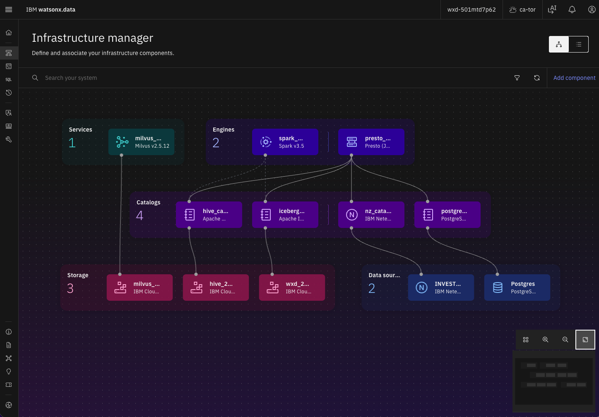
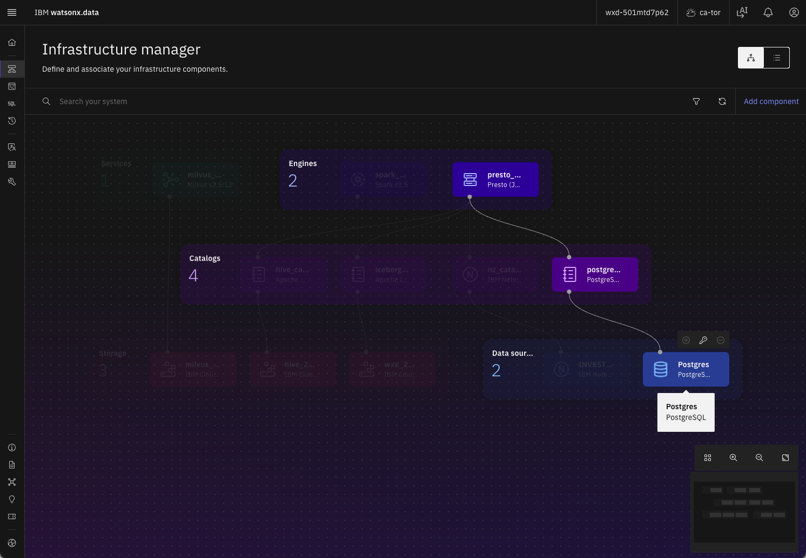
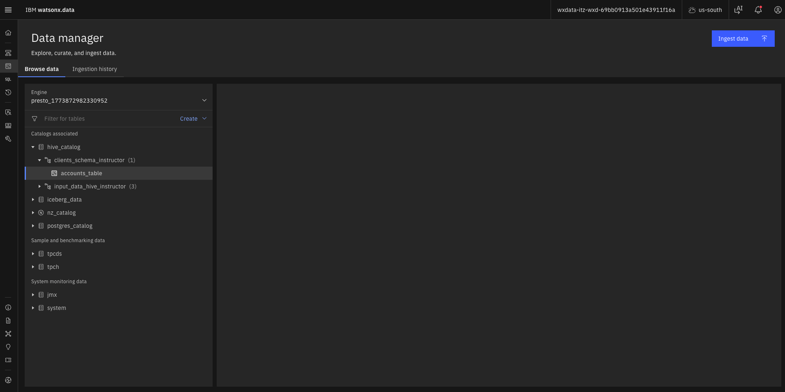
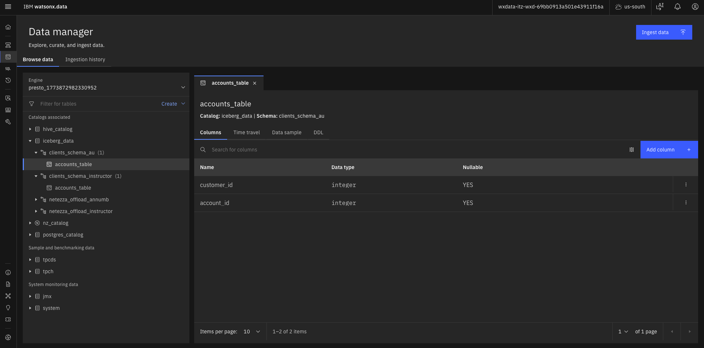
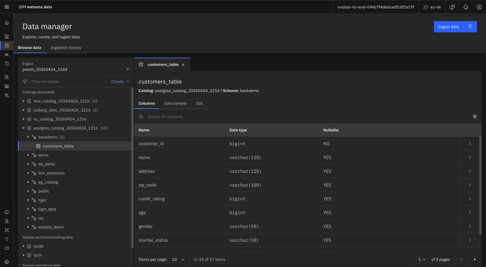
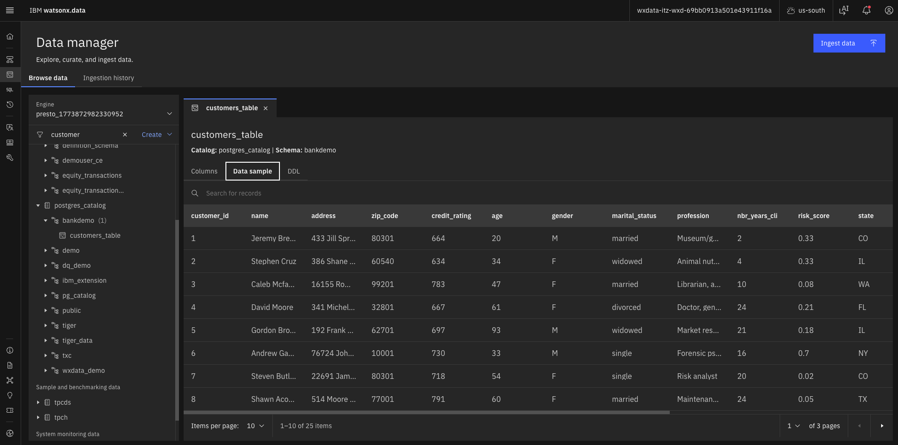
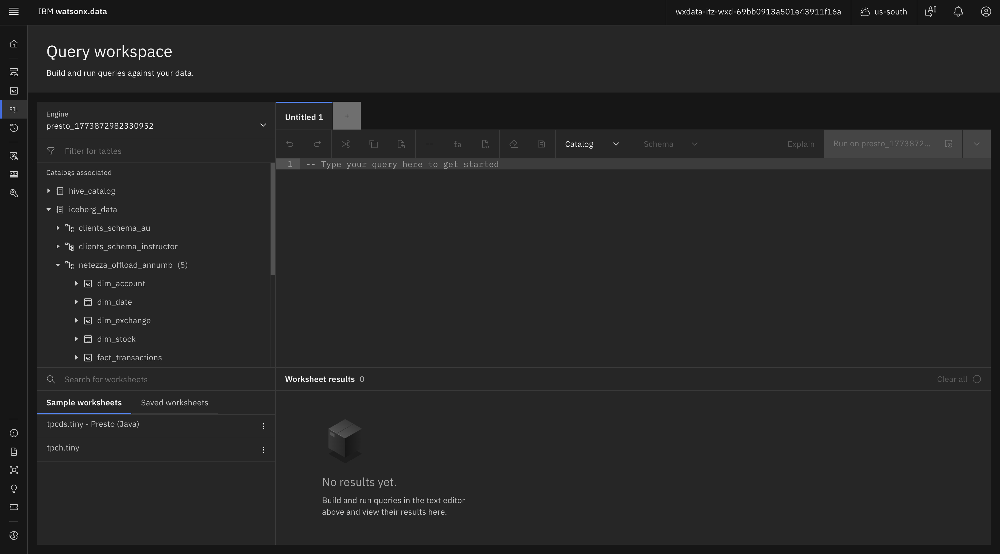
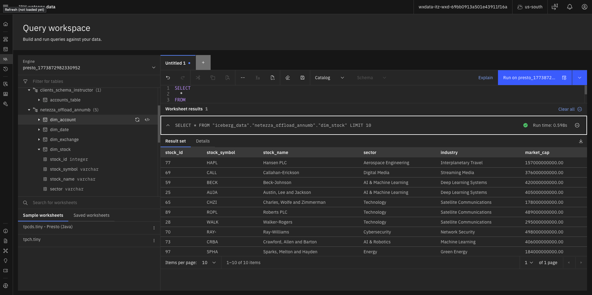
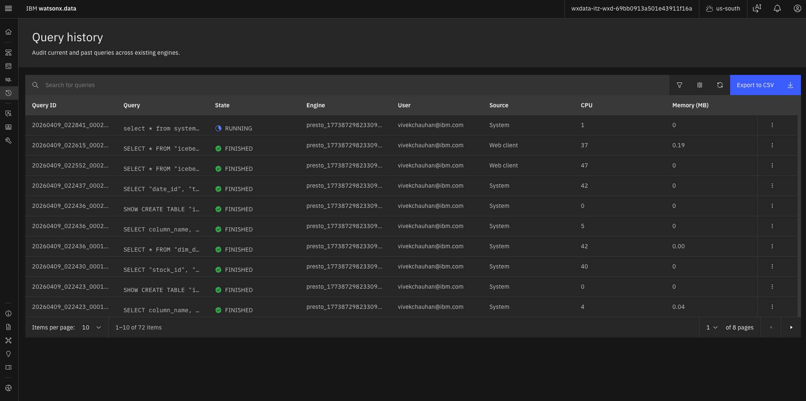

Data Discovery and Exploration
Explore FinWin Bank's unified data platform without writing a single line of code. Browse catalogs, understand the star schema, preview tables, and run federated SQL queries across Postgres, Netezza, and Iceberg.
Introduction
What This Lab Demonstrates
This lab demonstrates how business users can explore and analyze data in watsonx.data without writing code. You'll learn to navigate the Data Manager interface, understand data relationships, preview tables, and run pre-built SQL queries to answer business questions — all through an intuitive graphical interface.
What You'll Learn
- Navigate watsonx.data — use the Data Manager interface to browse catalogs and schemas
- Understand data catalogs — learn the purpose of Postgres, Netezza, Iceberg, and Hive sources
- Explore table structures — browse tables, view columns, and understand data types
- Preview data — see sample data from any table
- Use Query Workspace — generate and run queries with auto-complete
- Run business queries — execute pre-built SQL that joins data across sources
- Review query history — track and analyze past queries
What You'll Build
- ✅ Explored FinWin Bank's data landscape across four catalogs
- ✅ Understood the star schema structure for equity transactions
- ✅ Previewed data from multiple tables
- ✅ Run queries joining Postgres, Netezza, and Iceberg data
- ✅ Answered business questions about customer trading patterns
Prerequisites
- ✅ Completed Getting Started Setup Guide Section 1
- ✅ Access to the shared watsonx.data environment
- ✅ Basic understanding of business data concepts (no SQL required — queries are provided)
Lab Overview
The Data Landscape
FinWin Bank's data lives across four catalogs in watsonx.data. Each serves a different purpose:
| Catalog | What it is | What's in it |
|---|---|---|
postgres_catalog_20260922_1602 | Operational database | Live customer records (customers_table) |
nz_catalog_20260922_1602 | Legacy data warehouse (Netezza) | Current-year equity transactions (2025) |
iceberg_data_20260922_1602 | Modern lakehouse | Historical transactions (2019–2024), accounts, holdings — offloaded and optimized |
hive_catalog | Raw data lake | Source files (accounts, holdings, tax rates) before processing |
The power of watsonx.data is that you can query across all of these from a single interface — a financial advisor can look up a customer in Postgres, check their trading history in Iceberg, and see current-year activity in Netezza, all in one place.
Data Architecture
Customer Data
Current Year
Transactions
Historical Data
2019–2024
Source Files
Federated Queries
Star Schema Overview
Your Iceberg schema (iceberg_data_20260922_1602.netezza_offload_instructor) contains a star schema — a common analytics pattern where a central fact table records business events, surrounded by dimension tables that provide context.
Core Trading Data
Account Details
Stock Info
Time Dimensions
Exchange Info
postgres_catalog
Lab Workflow
Data Manager
Star Schema
Data
Workspace
Queries
History
Step 1 – Exploring the Infrastructure & Data Manager
1.1 Access watsonx.data
- From the IBM Cloud Resource List, open your watsonx.data instance (under Databases, labeled
wxdata-) - Click the hamburger menu (☰) → Infrastructure manager

1.2 Browse Data Sources
- You'll observe all Services, Engines, Catalogs, Storage and Data Sources. Click Postgres Data Source to see its database details.

1.3 Browse Catalogs
- Click the hamburger menu (☰) → Data manager

- You'll see the four catalogs listed. Click iceberg_data to expand it and find your schema (e.g.,
netezza_offload_<initials>)
1.4 Explore Your Schema
- Click on your schema to see the tables inside:
fact_transactions— the core trading datadim_account— account informationdim_stock— stock detailsdim_exchange— exchange informationdim_date— date dimensions
- Click on any table name to see its structure: column names, data types, and descriptions (if available)
Step 2 – Understanding the Star Schema
Navigate to your schema under iceberg_data and explore these tables:
Fact Table: fact_transactions
The core of the dataset — every stock trade made by FinWin Bank clients.
| Column | What it means |
|---|---|
transaction_id | Unique trade ID |
account_id | Who traded (→ dim_account) |
stock_id | What was traded (→ dim_stock) |
exchange_id | Where it traded (→ dim_exchange) |
date_id | When it happened (→ dim_date) |
order_type | BUY or SELL |
quantity | Number of shares |
price | Price per share |
total_value | quantity × price |
Dimension Tables
Click on each table to see its columns. Use the Preview button to see sample data.
| Table | Key columns |
|---|---|
| dim_account | Account type (Retail/Institutional/Margin), status, risk level (Low/Medium/High), balance, trading experience |
| dim_stock | 100 stocks with ticker symbol, company name, sector, industry, market cap |
| dim_exchange | Exchange name (NYSE, NASDAQ, SGX…), country, timezone, currency |
| dim_date | Year, quarter, month, week, day of week, weekend flag, holiday indicators |
Customer Data (Different Catalog)
Navigate to postgres_catalog → bankdemo → customers_table to see live customer records: names, contact info, location, date of birth, account opening date.

Step 3 – Previewing Data
For any table in Data Manager:
- Click the table name to see its columns and types
- Click Preview or Sample Data to see actual rows

Try These Previews
Preview dim_stock
You'll see familiar names like IBM, AMZN, BAC, and HD. Notice how each stock has a sector and market cap — this lets you analyze trading patterns by industry.
Preview dim_account
See different account types (Retail, Institutional, Margin), risk levels, trading experience, account balances, and status.
Preview customers_table
See customer names, locations, and the customer_id that links to accounts. Observe demographic information.
Step 4 – Using the Query Workspace
4.1 Access Query Workspace
- From the hamburger menu (☰), select Query workspace
- In the left panel, navigate to any table (e.g.,
dim_stock)
4.2 Generate a Query
- Click the three dots (⋮) next to the table → Generate SELECT
- A query appears in the editor. Click Run on presto-01 to execute it.

4.3 View Results
Results appear below with column headers, data rows, row count, and execution time.

Tips for Query Workspace
- Auto-complete: start typing table or column names and press Tab
- Multiple queries: separate queries with semicolons
- Save queries: use the Save button to keep frequently used queries
- Export results: download results as CSV for further analysis
Step 5 – Business Questions with SQL
Below are five business questions a FinWin Bank analyst might ask, each answered by a SQL query that joins across multiple tables. Copy each query into the Query Workspace and run it.
SHOW CATALOGS; in the Query Workspace to confirm them, or check ICEBERG_CATALOG, POSTGRES_CATALOG, and NETEZZA_CATALOG in your env.txt file.Engine: Select presto_engine when running queries.
5.1 Customer Activity — Which customers traded the most last year?
Joins transactions → accounts → customers (across Iceberg and Postgres) to find the most active traders.
SELECT
c.name,
c.city,
c.state,
da.account_type,
COUNT(ft.transaction_id) AS total_trades,
SUM(ft.total_value) AS total_value
FROM iceberg_data_20260922_1602.netezza_offload_instructor.fact_transactions ft
JOIN iceberg_data_20260922_1602.netezza_offload_instructor.dim_account da
ON ft.account_id = da.account_id
JOIN postgres_catalog_20260922_1602.bankdemo.customers_table c
ON da.account_id = c.customer_id
JOIN iceberg_data_20260922_1602.netezza_offload_instructor.dim_date dd
ON ft.date_id = dd.date_id
WHERE dd.year = 2024
GROUP BY c.name, c.city, c.state, da.account_type
ORDER BY total_value DESC
LIMIT 10;Returns: Top 10 customers by trading value in 2024, with names, locations, account types, trade counts, and total values.
5.2 Stock Performance — Average trade price by sector?
Joins transactions → stocks to compare average prices across industry sectors.
SELECT
ds.sector,
COUNT(ft.transaction_id) AS trade_count,
ROUND(AVG(ft.price), 2) AS avg_price,
ROUND(SUM(ft.total_value), 2) AS total_volume
FROM iceberg_data_20260922_1602.netezza_offload_instructor.fact_transactions ft
JOIN iceberg_data_20260922_1602.netezza_offload_instructor.dim_stock ds
ON ft.stock_id = ds.stock_id
GROUP BY ds.sector
ORDER BY total_volume DESC;Returns: Trading activity by sector (Technology, Finance, Healthcare…), average stock price, and total trading volume per sector.
5.3 Exchange Analysis — Trading volume by exchange and year?
Joins transactions → exchanges → dates to show activity across global exchanges over time.
SELECT
de.exchange_name,
de.country,
dd.year,
COUNT(ft.transaction_id) AS trade_count,
ROUND(SUM(ft.total_value), 2) AS total_volume
FROM iceberg_data_20260922_1602.netezza_offload_instructor.fact_transactions ft
JOIN iceberg_data_20260922_1602.netezza_offload_instructor.dim_exchange de
ON ft.exchange_id = de.exchange_id
JOIN iceberg_data_20260922_1602.netezza_offload_instructor.dim_date dd
ON ft.date_id = dd.date_id
GROUP BY de.exchange_name, de.country, dd.year
ORDER BY dd.year, total_volume DESC;Returns: Trading volume by exchange (NYSE, NASDAQ…), geographic distribution, year-over-year trends.
5.4 Risk Profile — Trading patterns by account risk level?
Joins transactions → accounts → dates to compare how Low, Medium, and High-risk accounts trade differently.
SELECT
da.risk_level,
da.account_type,
dd.year,
COUNT(ft.transaction_id) AS trade_count,
ROUND(AVG(ft.quantity), 0) AS avg_shares_per_trade,
ROUND(AVG(ft.total_value), 2) AS avg_trade_value
FROM iceberg_data_20260922_1602.netezza_offload_instructor.fact_transactions ft
JOIN iceberg_data_20260922_1602.netezza_offload_instructor.dim_account da
ON ft.account_id = da.account_id
JOIN iceberg_data_20260922_1602.netezza_offload_instructor.dim_date dd
ON ft.date_id = dd.date_id
GROUP BY da.risk_level, da.account_type, dd.year
ORDER BY dd.year, da.risk_level;Returns: Trading behavior by risk level, differences between account types, average shares and trade values, trends over time.
5.5 Cross-Source Federation — Combine current and historical data
This query spans both Iceberg and Netezza to find the top 10 accounts by total trading value across all years — demonstrating watsonx.data's federation capability.
SELECT
da.account_id,
da.account_type,
da.risk_level,
dd.year,
SUM(ft.total_value) AS total_value
FROM (
SELECT account_id, date_id, total_value
FROM iceberg_data_20260922_1602.netezza_offload_instructor.fact_transactions
UNION ALL
SELECT account_id, date_id, total_value
FROM nz_catalog_20260922_1602.equity_transactions_ly.fact_transactions
) ft
JOIN (
SELECT account_id, account_type, risk_level
FROM iceberg_data_20260922_1602.netezza_offload_instructor.dim_account
UNION ALL
SELECT account_id, account_type, risk_level
FROM nz_catalog_20260922_1602.equity_transactions_ly.dim_account
) da ON ft.account_id = da.account_id
JOIN (
SELECT date_id, year
FROM iceberg_data_20260922_1602.netezza_offload_instructor.dim_date
UNION ALL
SELECT date_id, year
FROM nz_catalog_20260922_1602.equity_transactions_ly.dim_date
) dd ON ft.date_id = dd.date_id
GROUP BY da.account_id, da.account_type, da.risk_level, dd.year
ORDER BY total_value DESC
LIMIT 10;Returns: Top accounts across ALL years (2019–2025), combining historical Iceberg data with current-year Netezza data. Demonstrates data federation across catalogs.
Step 6 – Reviewing Query History
6.1 Access Query History
- Hamburger menu (☰) → Query history
- Each entry shows: query text, who ran it, status (Success/Failed), duration, timestamp.

6.2 Analyze Execution Plans
- Click any query to see its execution plan — useful for understanding which data sources were accessed, how tables were joined, query performance metrics, and resource usage.
Why Query History Matters
- Audit trail — track who queried what data and when
- Performance analysis — identify slow queries
- Reuse queries — find and re-run previous queries
- Troubleshooting — debug failed queries
- Learning — see how others structure their queries
Key Takeaways
✅ Data Federation
Postgres holds live customer data. Netezza holds current-year transactions. Iceberg holds optimized historical data. Presto federates queries across all of them.
✅ Star Schema
The star schema (fact + dimension tables) lets you slice trading data by customer demographics, stock characteristics, exchange locations, and time periods.
✅ Key Skills
Navigate Data Manager · Browse catalogs and schemas · Preview data · Use Query Workspace · Join data across sources · Review query history.
✅ Business Value
Self-service analytics · Unified view of all data sources · Fast insights without IT · Transparent data availability · Seamless federation.
Best Practices
Exploring Data Effectively
| ✅ DO | ❌ DON'T |
|---|---|
| Start broad, then narrow — catalogs → schemas → tables | Query large tables without LIMIT clauses |
| Preview before querying to understand data structure | Join tables without understanding relationships |
| Check data types before joining | Ignore data types when filtering |
| Use auto-complete to reduce typos | Forget to check query history for errors |
| Save useful queries for reuse | Run queries without previewing first |
Writing Effective Queries
| ✅ DO | ❌ DON'T |
|---|---|
Use meaningful aliases: ft, da, ds | Use SELECT * in production |
| Add LIMIT when exploring large datasets | Forget WHERE clauses on large tables |
| Format for readability — indent joins and conditions | Join without understanding cardinality |
| Build queries incrementally and test each step | Ignore query performance |